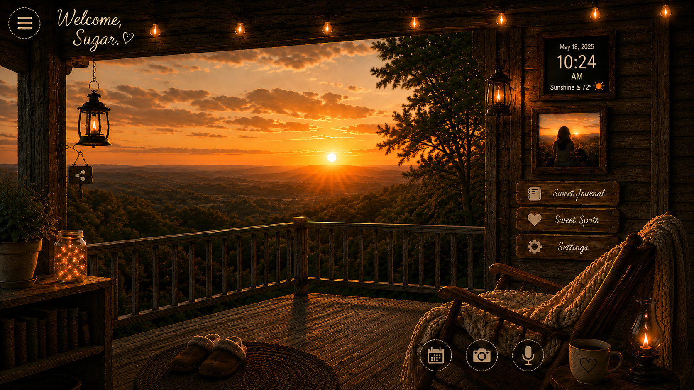

What kind of sweet moment, sugar?
Pick the one that fits — every one of these adds a little sugar to the jar.

Turn your device sideways, sugar — this porch likes to stretch out.
Pick the one that fits — every one of these adds a little sugar to the jar.